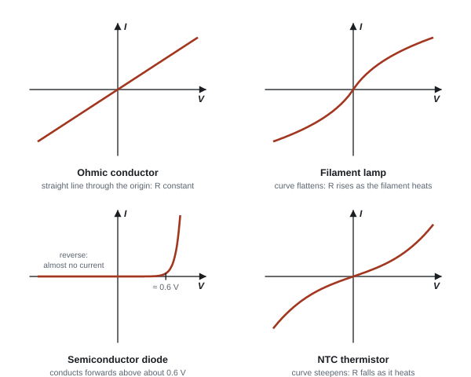
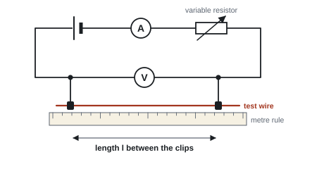
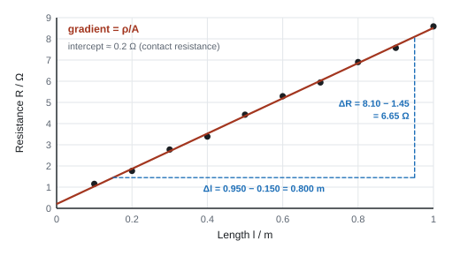
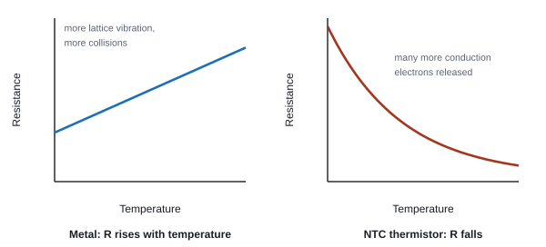

Current, P.D. & Resistance
Every circuit is about charges moving and carrying energy. This page builds the language for it: current, potential difference, resistance and power. Then you'll see why resistivities of different materials range over more than thirty powers of ten, why a filament lamp's graph curves, and why a thermistor's resistance falls when it warms up while a metal's rises.
Spec64Electric current
Know that current is the rate of flow of charged particles, and use I = ΔQ/Δt.
What current is
- An electric current is a flow of charge carriers. In metals the carriers are free (conduction) electrons. In electrolytes and ionised gases they are ions (positive and negative).
- Current is the rate of flow of charge:
Current
- I = current (ampere, A); ΔQ = charge passing a point (coulomb, C); Δt = time taken (s).
- So 1 C = 1 A s: one coulomb is the charge that passes when a current of 1 A flows for 1 s.
- Charge comes in whole numbers of the electron charge e = 1.60 × 10⁻¹⁹ C (given in the exam). The number of electrons carrying a charge Q is N = Q/e. One coulomb is about 6.25 × 10¹⁸ electrons.
Direction and measurement
- Conventional current is drawn from + to − round the outside of the circuit. Electrons actually drift the other way (− to +). Both pictures give the same answers as long as you stay consistent.
- Measure current with an ammeter in series. An ideal ammeter has zero resistance, so it doesn't change the current it measures.
charge and number of electrons
A phone charger supplies a steady 1.8 A for 25 minutes. How much charge flows, and how many electrons is that?
t = 25 × 60 = 1500 s (convert minutes first)
Q = It = 1.8 × 1500 = 2700 C
N = Q/e = 2700 / 1.60 × 10⁻¹⁹ = 1.69 × 10²² ≈ 1.7 × 10²² electrons (a number: no unit)
Electrons per second at 0.64 A: 0.64 / 1.60 × 10⁻¹⁹ = 4.0 × 10¹⁸ s⁻¹.
A phone charger delivers a steady current of 2.0 A for 45 minutes. Calculate the charge that flows and the number of electrons this represents.
Show solution
Convert the time to seconds first: \(45 \times 60 = 2700\ \text{s}\).
\[ \Delta Q = I\Delta t = 2.0 \times 2700 = 5400\ \text{C} \] \[ N = \frac{\Delta Q}{e} = \frac{5400}{1.60\times10^{-19}} = 3.4\times10^{22}\ \text{electrons} \]- "Use of I = ΔQ/Δt" (or Q = It) is the first mark. A count of electrons needs no unit.
- Divide the charge by e to get a number of electrons; never multiply by e.
Often asked as: number of electrons passing in a time or per second, time for a given charge, unit and base-unit MCQs, the meaning of symbols in I = nqvA.
Forgetting to convert minutes or hours to seconds. Multiplying by e instead of dividing.
Using a value from an earlier part of the question that the new part doesn't need (Oct 2019 examiner report: a time from part (i) was carried into part (ii) by mistake).
Examined in past papers even though the spec doesn't list it.
Base units of electrical quantities turn up in MCQs. Build them from equations you know (WPH12 Jun 2021):
- coulomb = A s (from Q = It)
- joule = kg m² s⁻² (from W = Fs); watt = kg m² s⁻³ (from P = W/t)
- volt = kg m² s⁻³ A⁻¹ (from V = P/I); ohm = kg m² s⁻³ A⁻² (from R = V/I)
The current is a base quantity; power, charge and p.d. are derived (WPH12 Oct 2020).
Spec65Potential difference
Use V = W/Q: the potential difference between two points is the energy transferred per unit charge.
Energy per coulomb
- The potential difference (p.d.) between two points is the work done (energy transferred) per unit charge as charge moves between them. In a component, electrical energy is transferred to other stores (thermal, light, kinetic).
Potential difference
- V = p.d. (volt, V); W = energy transferred (J); Q = charge (C). So 1 V = 1 J C⁻¹.
- Combine with Q = It to get the energy transferred in a time: W = VIt (see 69).
- Measure p.d. with a voltmeter in parallel (across the component). An ideal voltmeter has infinite resistance, so it takes no current.
- Current flows through a component; p.d. is across it.
A charged particle accelerated through a p.d.
- An electron moved through a p.d. V gains energy W = eV. If it starts from rest, this becomes kinetic energy: eV = ½mv². This links straight to the electronvolt (61) and electron diffraction (53–54).
energy from p.d. and charge
(a) A 12 V battery pushes 4.0 × 10⁴ C through a starter motor. Energy transferred?
W = QV = 4.0 × 10⁴ × 12 = 4.8 × 10⁵ J
(b) An electron is accelerated from rest through 2500 V. Find its kinetic energy and speed (m = 9.11 × 10⁻³¹ kg).
W = eV = 1.60 × 10⁻¹⁹ × 2500 = 4.00 × 10⁻¹⁶ J
v = √(2W/m) = √(2 × 4.00 × 10⁻¹⁶ / 9.11 × 10⁻³¹) = 3.0 × 10⁷ m s⁻¹
15 C of charge flows through a lamp and transfers 180 J of energy. Calculate the p.d. across the lamp and the energy transferred by each electron.
Show solution
\[ V = \frac{W}{Q} = \frac{180}{15} = 12\ \text{V} \]Each electron carries charge \(e\), so it transfers \(W = eV\):
\[ W = 1.60\times10^{-19} \times 12 = 1.92\times10^{-18}\ \text{J}\ (= 12\ \text{eV}) \]- "Use of V = W/Q"; W = VIt is accepted.
- p.d. = "energy transferred per unit charge" or "work done per unit charge". Not "per unit current" and not "energy per second".
Often asked as: energy from p.d. and charge, energy of an electron accelerated through a p.d. (often "give your answer to at least 3 s.f."), units MCQs such as J C⁻¹.
"The voltage flows through the lamp." Current flows through; p.d. is across.
Mixing up p.d. and e.m.f.: p.d. is energy transferred from electrical form in a component; e.m.f. is energy transferred to electrical form by a source (see 77).
Spec66Resistance and Ohm's law
Know that resistance is defined by R = V/I, and that Ohm's law (I ∝ V at constant temperature) is a special case.
Definition of resistance
Resistance
- R = resistance (ohm, Ω), V = p.d. across the component (V), I = current through it (A). 1 Ω = 1 V A⁻¹.
- This defines resistance and works for every component at every point on its I–V graph: the resistance at a point is V/I at that point.
Ohm's law: a special case
- Ohm's law: the current through a conductor is directly proportional to the p.d. across it, provided the temperature (and other physical conditions) stay constant.
- A component that obeys it is ohmic: its I–V graph is a straight line through the origin, so R is the same at every p.d. A metal wire kept at constant temperature is ohmic.
- A filament lamp, diode or thermistor is non-ohmic: V/I changes as the p.d. changes (see 70).
Reading resistance from a graph
- Straight line through the origin: R = V/I at any point, and on an I–V graph the gradient = 1/R.
- Curve: take V/I at the point you want. Do not use the gradient (tangent) of a curve: that is not the resistance in this course.
- Where the current is zero for a non-zero p.d. (e.g. a reverse-biased diode), the resistance is infinite.
resistance of a lamp at two p.d.s
A filament lamp carries 0.25 A at 2.0 V and 0.55 A at 12.0 V.
At 2.0 V: R = V/I = 2.0 / 0.25 = 8.0 Ω
At 12.0 V: R = 12.0 / 0.55 = 21.8 ≈ 22 Ω
The resistance rises because the filament is hotter at the higher p.d. (see 79). It is non-ohmic.
- "Resistance = p.d. / current" with V and I for the same point.
- Zero current at a non-zero p.d. → "resistance is infinite" (WPH12 Jan 2020 MCQ).
- LED: "resistance (almost) infinite below about 1.6 V, then it decreases" (WPH12 Oct 2024).
Often asked as: R from a point on a graph, identify which component's resistance falls with p.d., part of nearly every circuit calculation.
Using the gradient of a curved I–V graph as R (or as 1/R). Use V/I at the point.
Treating R = V/I as "Ohm's law". R = V/I is a definition; Ohm's law is the statement that I ∝ V at constant temperature.
Finding the whole-circuit current from only one of the resistances (Oct 2020 examiner report).
Spec69Electrical power and energy
Use P = VI and W = VIt, and derive and use P = I²R and P = V²/R.
The equations
- Power is the rate of energy transfer. Energy per coulomb (V) × coulombs per second (I) = energy per second:
- P = power (watt, W = J s⁻¹); W = energy transferred (J); t = time (s).
- Derive the other two forms by substituting R = V/I:
- put V = IR into P = VI → P = I²R
- put I = V/R into P = VI → P = V²/R
- Choose the form that matches what you know: P = I²R when the current is fixed or known (e.g. series), P = V²/R when the p.d. is fixed (e.g. components in parallel across a supply).
Comparing powers
- Same current (series): bigger R → more power (P = I²R).
- Same p.d. (parallel across a fixed supply): bigger R → less power (P = V²/R). So in a house, a lower-resistance appliance is the more powerful one.
- For a fixed resistor, doubling V or I quadruples P.
- In every "does it go up or down?" answer, say which quantity stays constant before you use the equation.
a heater
A heater is rated 2.0 kW at 230 V.
Current: I = P/V = 2000/230 = 8.7 A
Resistance: R = V²/P = 230²/2000 = 26 Ω
Energy in 15 minutes: W = Pt = 2000 × 900 = 1.8 × 10⁶ J. In kilowatt-hours: 2.0 kW × 0.25 h = 0.50 kWh (1 kWh = 3.6 × 10⁶ J).
is the student right?
An 8.0 Ω heater runs from a 12 V supply (negligible internal resistance). A student says that adding a second 8.0 Ω heater in parallel will halve the total power, "because the current is shared".
One heater: P = V²/R = 12²/8.0 = 18 W
Two in parallel: R = 8.0/2 = 4.0 Ω, P = 12²/4.0 = 36 W
The total power doubles (each heater still has 12 V across it), so the student is wrong.
(Two in series would give R = 16 Ω and P = 9.0 W: that is the arrangement that halves the power.)
From the definition of p.d., the energy transferred when charge \(Q\) passes through a component is \(W = VQ\). The charge that flows in time \(t\) is \(Q = It\), so:
\[ W = VQ = V(It) \quad\Rightarrow\quad \boxed{W = VIt} \]Power is energy transferred per unit time:
\[ P = \frac{W}{t} = \frac{VIt}{t} \quad\Rightarrow\quad \boxed{P = VI} \]From the definition of resistance, \(V = IR\). Substitute this for \(V\):
\[ P = (IR)\,I \quad\Rightarrow\quad \boxed{P = I^2R} \]Use this when you know the current, for example for components in series.
Or substitute \(I = V/R\) for \(I\) instead:
\[ P = V\left(\frac{V}{R}\right) \quad\Rightarrow\quad \boxed{P = \frac{V^2}{R}} \]Use this when you know the p.d., for example for components in parallel.
A lamp is labelled 12 V, 36 W. (a) Calculate the current in it and its resistance when working normally. (b) Calculate the energy it transfers in 5.0 minutes. (c) A student connects it to a 6.0 V supply and predicts the power will be 9.0 W. Show how she got this value and explain why the real power is larger.
Show solution
(a) From \(P = VI\) and then \(R = V/I\):
\[ I = \frac{P}{V} = \frac{36}{12} = 3.0\ \text{A} \qquad R = \frac{V}{I} = \frac{12}{3.0} = 4.0\ \Omega \](b) \(W = Pt = 36 \times 300 = 1.1\times10^{4}\ \text{J}\) (10 800 J).
(c) Assuming the resistance stays at 4.0 Ω:
\[ P = \frac{V^2}{R} = \frac{6.0^2}{4.0} = 9.0\ \text{W} \]At 6.0 V the filament is cooler, so its resistance is less than 4.0 Ω. With a smaller \(R\) and the same \(V\), \(P = V^2/R\) is bigger than 9.0 W.
- "Use of P = VI" / "use of P = I²R" / "use of P = V²/R"; for comparisons, "use of a suitable power equation to conclude that less power is dissipated".
- A conclusion mark is lost if the answer also contains a wrong statement about one of the variables (WPH12 Jun 2019).
- Derive P = V²/R (2 marks): "P = VI and V = IR (or I = V/R)", then substitute.
Often asked as: power or energy of a component, derive P = V²/R, "a student suggests…" claims about adding components, power from a point on an I–V graph, energy costs.
Using P = I²R with a current that changes, or P = V²/R with a p.d. that changes, without saying what is constant.
Giving power when the question asks for energy (Oct 2019 examiner report).
Examined in past papers even though the spec doesn't list it.
- Kilowatt-hour conversions: 1 kWh = 1000 W × 3600 s = 3.6 × 10⁶ J (WPH12 Jan 2021).
- Maximum power from a fixed supply happens when the total resistance is lowest, so compare the numbers and conclude (WPH12 Jun 2021).
- Non-ohmic lamps: two lamps in series do not have exactly 2× the resistance of one lamp at full p.d., because each is cooler and so has less resistance (WPH12 Jun 2023).
Spec70Current–p.d. graphs
Sketch, recognise and interpret I–V graphs for ohmic conductors, filament bulbs, thermistors and diodes.
Getting the data
- Put the component in series with an ammeter and a way of varying the p.d. (a variable resistor, or a potential divider for a range down to 0 V). Connect a voltmeter across the component.
- Reverse the component (or the supply) to get negative values of V and I.
- For a diode, add a protective resistor in series so the forward current can't get too large.

What each shape means
| Component | Shape | Why |
|---|---|---|
| Ohmic conductor (resistor or metal wire at constant temperature) | straight line through the origin | R constant: I ∝ V |
| Filament lamp | curve that gets less steep at higher p.d., symmetrical | more current → filament hotter → ions vibrate more → more collisions → R rises (79) |
| NTC thermistor | curve that gets steeper at higher p.d., symmetrical | more current → it warms up → more conduction electrons → R falls (79) |
| Diode | almost zero current in reverse; current rises steeply above about 0.6 V (silicon) forward | conducts in one direction only; very high R in reverse |
- Resistance at a point = V/I at that point (66). On the lamp graph, V/I rises along the curve; on the thermistor graph it falls.
- An LED behaves like a diode, but with a higher switch-on p.d. (about 1.6–2 V).
using an I–V graph
The I–V graph of a lamp passes through (6.0 V, 0.40 A). Find the resistance and the power at this p.d.
R = V/I = 6.0/0.40 = 15 Ω
P = VI = 6.0 × 0.40 = 2.4 W
Read values to within half a small square and quote them.
A filament lamp takes a current of 0.15 A at 2.0 V and 0.25 A at 6.0 V. Calculate its resistance at each p.d. and explain the difference.
Show solution
\[ R_{2\,\text{V}} = \frac{2.0}{0.15} = 13\ \Omega \qquad R_{6\,\text{V}} = \frac{6.0}{0.25} = 24\ \Omega \]At 6.0 V the current is larger, so more energy is transferred to the filament every second and it is much hotter. The metal ions vibrate with larger amplitude, the free electrons collide with them more often, and the drift velocity for a given p.d. is lower. So the resistance is higher.
- Sketch of a filament lamp: "correct shape in the positive quadrant" and "correct symmetry in the negative quadrant" (one mark each).
- Filament lamp explanation: "resistance increases as p.d. increases" / "current increases more slowly"; "temperature increases"; "ions/lattice vibrate more"; "more collisions between electrons and the lattice".
- Thermistor explanation: "resistance decreases as p.d. increases"; "more conduction electrons"; "I = nqvA, so the current increases".
- References to the gradient being 1/R are ignored.
Often asked as: identify a graph (MCQ), sketch the lamp or diode graph, a 6-mark comparison of a lamp and a thermistor, read a value and find R or P, draw the circuit for an LED or diode.
Swapping the lamp and the thermistor: they behave in opposite ways (Oct 2019 examiner report).
Drawing the circuit with no variable resistor (so only one reading is possible), or drawing a thermistor symbol by mistake (Oct 2024 examiner report).
Sketching only the positive quadrant when the question shows both.
Examined in past papers even though the spec doesn't list it.
LEDs: a circuit with the LED forward biased, an ammeter in series, a voltmeter across the LED and a way of varying the p.d.; resistance "almost infinite" below the switch-on p.d. (WPH12 Oct 2024).
Spec71Resistivity
Use R = ρl/A.
Resistance of a wire
- A longer wire has more resistance (charge carriers collide with more ions): R ∝ l.
- A thicker wire has less resistance (more carriers side by side): R ∝ 1/A.
- The material sets the constant of proportionality, its resistivity ρ:
Resistivity
- R = resistance (Ω); ρ = resistivity (Ω m); l = length (m); A = cross-sectional area (m²).
- Resistivity is the resistance of a sample of the material of unit length and unit cross-sectional area (or: ρ = RA/l with the terms defined). It depends on the material and its temperature, not on the shape.
- Units: ρ = RA/l → Ω × m² / m = Ω m (ohm metre, not ohm per metre).
Areas you will need
- Round wire: A = πr² = πd²/4. A micrometer measures the diameter: halve it before squaring.
- Strip, ribbon or film: A = width × thickness.
- Conversions: 1 mm = 10⁻³ m, so 1 mm² = 10⁻⁶ m²; 1 cm² = 10⁻⁴ m².
| Material | Typical resistivity / Ω m (room temperature) |
|---|---|
| copper | 1.7 × 10⁻⁸ |
| aluminium | 2.7 × 10⁻⁸ |
| constantan | about 5 × 10⁻⁷ |
| nichrome | about 1.1 × 10⁻⁶ |
| silicon (pure) | about 10³ |
| glass, plastics | 10¹⁰ to 10¹⁶ |
The huge range is explained in 73.
resistance of a wire
A nichrome wire is 1.50 m long with diameter 0.32 mm. ρ = 1.10 × 10⁻⁶ Ω m. Find R.
r = 0.16 mm = 1.6 × 10⁻⁴ m; A = π(1.6 × 10⁻⁴)² = 8.04 × 10⁻⁸ m²
R = ρl/A = 1.10 × 10⁻⁶ × 1.50 / 8.04 × 10⁻⁸ = 20.5 Ω
rearranging for length or resistivity
(a) What length of copper wire (ρ = 1.7 × 10⁻⁸ Ω m, diameter 0.50 mm) has a resistance of 0.50 Ω?
A = π(2.5 × 10⁻⁴)² = 1.96 × 10⁻⁷ m²
l = RA/ρ = 0.50 × 1.96 × 10⁻⁷ / 1.7 × 10⁻⁸ = 5.8 m
(b) A conducting strip is 2.0 cm wide, 0.15 mm thick and 12 cm long, with R = 4.8 Ω. Find ρ.
A = 0.020 × 1.5 × 10⁻⁴ = 3.0 × 10⁻⁶ m²
ρ = RA/l = 4.8 × 3.0 × 10⁻⁶ / 0.12 = 1.2 × 10⁻⁴ Ω m
stretching a wire
A wire is stretched to twice its length. Its volume (and resistivity) don't change. What happens to R?
Volume V = Al is constant, so if l doubles, A halves.
R = ρl/A = ρl²/V, so R ∝ l²: doubling l makes R four times bigger.
Calculate the resistance of a 1.50 m length of constantan wire of diameter 0.40 mm. Resistivity of constantan = \(4.9\times10^{-7}\ \Omega\ \text{m}\).
Show solution
\[ A = \frac{\pi d^2}{4} = \frac{\pi \times (0.40\times10^{-3})^2}{4} = 1.26\times10^{-7}\ \text{m}^2 \] \[ R = \frac{\rho l}{A} = \frac{4.9\times10^{-7} \times 1.50}{1.26\times10^{-7}} = 5.8\ \Omega \]- "Use of R = ρl/A" and "use of A = πr²" are separate marks. If the diameter is used as the radius, the area mark can still be given when the substitution is dimensionally right, but the answer will be wrong.
- Definition: "resistance of a sample of unit cross-sectional area and unit length".
- In a "show that" you must give one more significant figure than the stem (show 23.5 Ω for "about 24 Ω").
Often asked as: find ρ, l, A or a diameter (2–3 marks, almost every paper), rectangular cross-sections, choosing between copper and aluminium cables, stretching a wire at constant volume.
Not halving the diameter, or forgetting π or the square. Powers of ten with mm, mm² and "milli" (65 mΩ = 0.065 Ω).
Mixing up resistance (Ω, depends on shape) and resistivity (Ω m, a property of the material): a frequent cause of zero marks (Jan 2022 examiner report).
Missing or wrong unit for resistivity: it is Ω m (Jan 2025 examiner report). Area is in m², never m⁻².
For a stretched wire, saying "R against l² is a straight line" when the question wants "R is proportional to l²" (Oct 2024 examiner report).
Examined in past papers even though the spec doesn't list it.
- Constant-volume stretching: R = ρl²/V, so R ∝ l² (WPH12 Jun 2026).
- Using a table of resistivity against temperature to estimate a filament temperature (WPH12 Jun 2022).
Spec72Core practical 7: resistivity of a material
Measure the electrical resistivity of a material (a metal wire).
Principle
- Measure the resistance R of different lengths l of the same wire. Since R = (ρ/A) l, a graph of R against l is a straight line with gradient ρ/A. Measure the diameter to get A, then ρ = gradient × A.

Core practical 7: method in brief
- Measure the diameter of the wire with a micrometer at several places along it, turning it through 90° each time. Check the micrometer's zero error first. Take the mean.
- Tape the wire along a metre rule. Connect it into the circuit with crocodile clips: cell, ammeter and variable resistor in series with the wire; voltmeter across the wire between the clips.
- Set the clips 0.100 m apart. Close the switch, read V and I, then open the switch straight away.
- Repeat for 8–10 lengths up to about 1 m. Repeat each reading and average. R = V/I for each length.
- Plot R against l, draw the line of best fit and find the gradient.
- ρ = gradient × A, where A = πd²/4.
Variables and safety
- Independent: length l. Dependent: resistance R (from V and I). Control: the wire (same material and diameter) and its temperature, so keep the current small and the switch closed only briefly.
- Safety: the wire can get hot at low resistance (short lengths). Don't touch it while current flows, and use a low supply p.d.

ρ from the gradient
Diameter (mean of readings) d = 0.274 mm. From the graph, gradient = (8.10 − 1.45)/(0.950 − 0.150) = 6.65/0.800 = 8.31 Ω m⁻¹.
A = π(0.274 × 10⁻³)²/4 = 5.90 × 10⁻⁸ m²
ρ = gradient × A = 8.31 × 5.90 × 10⁻⁸ = 4.9 × 10⁻⁷ Ω m (about right for constantan)
Uncertainty: d = 0.274 ± 0.002 mm is a 0.73% uncertainty, so A (which uses d²) has 2 × 0.73 ≈ 1.5% uncertainty. The diameter is usually the biggest source of uncertainty.
Errors and improvements
- Heating raises the resistance: small currents, switch off between readings.
- Contact resistance at the clips and the clips' width make l uncertain: the graph method puts this into the intercept, so the gradient (and ρ) is not affected. This is why a graph beats a single calculation.
- The wire may not be uniform: measure d at several points and orientations.
- Kinks in the wire make l too large: keep it straight and taut.
In CP7 a student's graph of \(R\) against \(l\) has a gradient of 8.4 Ω m⁻¹ and an intercept of 0.30 Ω. Her micrometer readings of the diameter are 0.27, 0.28, 0.27, 0.28 and 0.27 mm. Calculate the resistivity, and suggest what caused the intercept.
Show solution
Mean diameter \(= 0.274\ \text{mm} = 2.74\times10^{-4}\ \text{m}\), so
\[ A = \frac{\pi (2.74\times10^{-4})^2}{4} = 5.90\times10^{-8}\ \text{m}^2 \] \[ \rho = \text{gradient} \times A = 8.4 \times 5.90\times10^{-8} = 5.0\times10^{-7}\ \Omega\ \text{m} \]The 0.30 Ω intercept means every reading includes an extra resistance that doesn't depend on \(l\): the contact resistance of the crocodile clips plus the resistance of the connecting leads (or an ohmmeter zero error). It doesn't affect the gradient, so \(\rho\) is still valid.
- Method (3–4 marks): "micrometer (or digital calliper) for the diameter", "metre rule for the length", "voltmeter in parallel, ammeter in series" (or an ohmmeter), "use ρ = RA/l, or a graph gradient".
- Circuit (2 marks): supply, ammeter, variable resistor and wire in series; voltmeter across the wire.
- Graph (3 marks): "use of πr² or πd²/4", "suitable axes", "the matching gradient gives ρ". Accepted pairs include R against l (gradient ρ/A), R against l/A (ρ), RA against l (ρ), l against R (A/ρ).
- Gradient: use a triangle over more than half the line; quote points read accurately.
Often asked as: describe the method, draw the circuit, choose the graph and say what the gradient is, process a gradient into ρ.
Using a ruler or vernier for the diameter of a thin wire: you need a micrometer.
Using one pair of readings (V/I) instead of a gradient when the question gives a graph.
Spec73I = nqvA and the range of resistivities
Use I = nqvA to explain why resistivities of different materials cover such a huge range.
Deriving the transport equation
- Picture a conductor of cross-sectional area A with n charge carriers per cubic metre, each of charge q, drifting at average speed v.
- In a time t, carriers move a distance vt, so all the carriers in a volume Avt pass a point.
- Number passing = nAvt; charge passing = nAvtq.
- Current = charge / time:
Current and drift velocity
- n = number density of charge carriers (number of conduction electrons per m³, unit m⁻³); q = charge on each carrier (C; for electrons, e = 1.60 × 10⁻¹⁹ C); v = drift velocity (m s⁻¹); A = cross-sectional area (m²).
- Drift velocity = the average (mean) velocity of the charge carriers along the conductor. The electrons move randomly at high speeds; the drift is a slow average movement superimposed on this.
Why resistivities range so widely
| Type | n / m⁻³ (roughly) | Resistivity |
|---|---|---|
| metal | 10²⁸ to 10²⁹ | very low |
| semiconductor | 10¹⁵ to 10²² (rises with temperature and light) | in between |
| insulator | almost zero | enormous |
- For the same current through the same area, v ∝ 1/n. Few carriers would need an enormous drift speed, which the p.d. can't produce, so the current is tiny and the resistivity is huge.
- So the number of conduction electrons per unit volume is the main reason resistivity ranges over about 24 powers of ten.
- Drift speeds in metals are tiny (about 10⁻⁴ m s⁻¹), yet a lamp lights at once: the electric field is set up round the whole circuit almost instantly, so all the electrons start drifting together.
drift velocity in copper
A copper wire of diameter 0.80 mm carries 2.0 A. n = 8.5 × 10²⁸ m⁻³. Find the drift velocity.
A = π(0.40 × 10⁻³)² = 5.03 × 10⁻⁷ m²
v = I/(nqA) = 2.0 / (8.5 × 10²⁸ × 1.60 × 10⁻¹⁹ × 5.03 × 10⁻⁷) = 2.9 × 10⁻⁴ m s⁻¹
At this speed an electron takes about an hour to drift 1 m.
reasoning with I = nqvA
(a) A wire is cut to half its length and connected to the same p.d. What happens to the drift velocity?
R = ρl/A halves → I = V/R doubles → n, q and A are unchanged, so by I = nqvA v doubles.
(b) Two wires of the same metal are in series; wire Z has a quarter of the cross-sectional area of wire W.
Same current (series), same n and q, so v ∝ 1/A: v in Z is 4 times v in W.
Take a wire of cross-sectional area \(A\). It contains \(n\) charge carriers per unit volume (the number density, in \(\text{m}^{-3}\)), each with charge \(q\), all drifting at speed \(v\).
Pick a cross-section of the wire and watch it for a time \(\Delta t\). Each carrier moves a distance \(v\Delta t\), so every carrier that starts within \(v\Delta t\) of the cross-section gets through. They fill a cylinder of volume:
\[ \text{volume} = A \times v\Delta t \]The number of carriers in that cylinder, and the charge they carry, are:
\[ N = nAv\Delta t \qquad \Delta Q = Nq = nAv\Delta t\,q \]Current is charge per unit time, so divide by \(\Delta t\):
\[ I = \frac{\Delta Q}{\Delta t} = \frac{nAv\Delta t\, q}{\Delta t} \quad\Rightarrow\quad \boxed{I = nqvA} \]A copper wire of cross-sectional area 1.0 mm² carries a current of 2.0 A. Copper has \(8.5\times10^{28}\) free electrons per m³. Calculate the drift velocity of the electrons.
Show solution
Convert the area: \(1.0\ \text{mm}^2 = 1.0\times10^{-6}\ \text{m}^2\). Rearrange \(I = nqvA\):
\[ v = \frac{I}{nqA} = \frac{2.0}{8.5\times10^{28} \times 1.60\times10^{-19} \times 1.0\times10^{-6}} = 1.5\times10^{-4}\ \text{m s}^{-1} \]That is 0.15 mm per second. An electron would take nearly two hours to drift one metre.
- "Use of I = nqvA (with a dimensionally correct A)". A minus sign on v is ignored.
- Drift velocity: "average/mean velocity of the (free) electrons" (accept "speed", "charge carriers").
- "Copper has a high concentration (n) of charge carriers, so v is small."
- Comparisons: say what changes and what stays constant (n and q for the same metal; I in series), then conclude.
Often asked as: calculate v (almost every paper), compare drift speeds in two wires, what happens when a wire's length or area changes, the meaning of n (MCQ).
Using the electron's mass instead of its charge for q, or forgetting q altogether (Jan 2022, Jun 2019 examiner reports).
Using the diameter as the radius, or forgetting π or the square (Jan 2021 examiner report).
"Length isn't in I = nqvA, so changing it has no effect." It changes R, so it changes I, so it changes v (Jan 2022 examiner report).
Examined in past papers even though the spec doesn't list it.
Comparing two metals with the same current and area: the one with the larger n has the smaller drift speed (WPH12 Oct 2024). Comparing copper and aluminium cables needs both R and n, and sometimes you can't decide without more data (WPH12 Jan 2024).
Spec79Resistance and temperature
Model how resistance changes with temperature using lattice vibrations and the number of conduction electrons, for metals and NTC thermistors.
The two factors
- The current depends on how many charge carriers there are (n) and how freely they drift (collisions with the vibrating positive ions of the lattice). I = nqvA ties them together.
- Raising the temperature does two things:
- the ions of the lattice vibrate more (bigger amplitude), so electrons collide with the lattice more often, which reduces the drift velocity: R up;
- in a semiconductor, more electrons gain enough energy to become conduction electrons, so n increases: R down.
Metals
- In a metal, n is already huge and does not change noticeably with temperature.
- Temperature rises → lattice ions vibrate with greater amplitude → more frequent collisions between conduction electrons and the lattice → lower drift velocity for the same p.d. → resistance increases.
- This is why a filament lamp's I–V graph flattens (70).
NTC thermistors
- A thermistor is made of a semiconductor. NTC = negative temperature coefficient: its resistance falls as temperature rises.
- Temperature rises → electrons gain energy and are released → many more conduction electrons (n rises a lot) → resistance decreases.
- The lattice vibrations also increase, but the effect of the extra conduction electrons is much bigger, so overall R falls.

model answers
Explain why the resistance of a metal wire increases as its temperature rises. (3 marks)
As the temperature rises, the lattice ions vibrate with a larger amplitude. So conduction electrons collide with the lattice more frequently. So the resistance increases.
Explain why the resistance of an NTC thermistor decreases as its temperature rises. (2 marks)
As the temperature rises, more electrons gain enough energy to become conduction electrons (n increases). So the resistance decreases (by I = nqvA, more current for the same p.d.).
- Metal: "the (amplitude of) lattice vibrations increase"; "an increase in the frequency/rate of collisions of electrons with the lattice"; "resistance increases". Allow atoms/ions for lattice. The "resistance increases" mark depends on one of the first two being scored.
- Thermistor: "more conduction (free) electrons" or "more charge carriers", so "resistance decreases". Allow the converse.
- "Thermistors are semiconductors."
Often asked as: 3-mark metal explanation, 2-mark thermistor explanation, MCQs on what happens to lattice vibrations and electron numbers, combined circuits with a thermistor and a metal wire.
Writing about the thermistor when the question is about the metal (more than half of candidates scored 0 on this in Jan 2025, examiner report).
Vague words: "particles", "atoms collide with each other", "electrons collide with each other". Say electrons collide with the lattice (ions).
Saying "a change in temperature causes a change in electrons" when a specific change is needed (Oct 2023 examiner report).
For a thermistor, thinking lattice vibrations decrease when it gets hotter. They increase; the increase in n simply outweighs them (Jan 2022 examiner report on an MCQ).
Examined in past papers even though the spec doesn't list it.
- In a circuit with a thermistor and a metal-wire resistor, if the current falls as the temperature rises, the wire's increase in resistance must be greater than the thermistor's decrease (WPH12 Jan 2024).
- A filament's temperature rise lowers its power at fixed p.d., by P = V²/R (WPH12 Jun 2021).
Spec80Resistance and illumination
Model how resistance changes with light intensity in terms of the number of conduction electrons, and apply it to LDRs.
How an LDR works
- An LDR (light-dependent resistor) is made of a semiconductor.
- Light is a stream of photons. When a photon is absorbed, its energy can release an electron so it becomes a conduction electron.
- Brighter light → more photons per second absorbed → more conduction electrons (n rises) → resistance falls (I = nqvA: more current for the same p.d.).
- Typical values: in the dark, about a megaohm; in bright light, about 100 Ω.
- At a fixed light level and temperature, an LDR's I–V graph is a straight line through the origin. Brighter light gives a steeper line (lower R).
- Uses: automatic street lights, garden lights, screen brightness control, alarms. In a divider (76), the output across the fixed resistor rises as light increases.
a 6-mark style chain
An LDR is connected to a cell that has internal resistance, with a voltmeter across the cell's terminals. Explain what happens to the voltmeter reading when the light gets brighter.
The light intensity increases, so more photons per second are incident on the LDR.
So more electrons are released: the number of conduction electrons increases.
So the resistance of the LDR decreases, and the total resistance of the circuit decreases.
So the current increases (I = ε/(R + r)).
The internal resistance is constant, so the p.d. across it (Ir, the lost volts) increases.
So the terminal p.d. (V = ε − Ir) decreases: the voltmeter reading falls.
- "Increase in light intensity: more photons per second incident on the LDR, so the number of (conduction) electrons increases, so the resistance decreases."
- Divider follow-on: "the LDR has a greater/smaller p.d.", "the p.d. across the fixed resistor decreases/increases", then a power equation for the power change.
- In some schemes the converse is not allowed for the first two marks: answer the direction of change the question asks about.
Often asked as: explain the LDR's response (2–4 marks), 6-mark chains through a divider or a cell's internal resistance, MCQs on readings when light changes.
Mixing up the LDR and the thermistor: an LDR responds to light (photons), a thermistor to temperature.
"Light gives the LDR more energy so it has more resistance." More energy frees more electrons, so the resistance falls.
Leaving out photons: the marks want "more photons (per second)".
Examined in past papers even though the spec doesn't list it.
Linking the photon model (57–62) to the LDR: each absorbed photon can free one electron, so a higher intensity (more photons per second) gives more conduction electrons (WPH12 Jun 2026).
Quick checks
A current of 0.40 A flows for 2.0 minutes. How much charge passes a point?
\(\Delta Q = I\Delta t = 0.40 \times 120 = 48\ \text{C}\). The first option forgets to convert minutes to seconds.
A copper wire has a thin section with half the cross-sectional area of the rest. How does the drift velocity in the thin section compare with that in the thick section?
The sections are in series, so the current is the same in both (charge is conserved), and \(n\) and \(q\) are the same. With \(I = nqvA\) fixed, halving \(A\) doubles \(v\).
A wire is stretched until it is twice as long. Its volume stays the same. What happens to its resistance?
Same volume, twice the length, so the area halves. \(R = \rho l/A\) has \(l\) doubled and \(A\) halved, so \(R\) goes up by \(2 \times 2 = 4\).
At one point on the I–V graph of a component, \(V = 4.0\ \text{V}\) and \(I = 0.20\ \text{A}\). The tangent to the curve there has a gradient of \(0.10\ \text{A V}^{-1}\). What is the resistance of the component at this point?
Resistance is defined as \(R = V/I = 4.0/0.20 = 20\ \Omega\). The 10 Ω option is 1/gradient, which is not the resistance unless the graph is a straight line through the origin.
Why does the resistance of an NTC thermistor decrease as its temperature increases?
Heating makes the lattice vibrate more, which on its own would raise the resistance (as in a metal). In a semiconductor the number of conduction electrons \(n\) increases enormously, which wins.
A 60 W lamp and a 100 W lamp are both designed for the 230 V mains. Which statement is correct when they are working normally?
\(R = V^2/P\). Same \(V\), so a smaller power means a larger resistance: \(230^2/60 = 880\ \Omega\) against \(230^2/100 = 530\ \Omega\). The 100 W lamp carries more current (\(I = P/V\)).